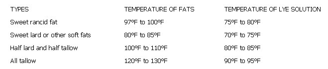

Good soap requires fats that are free of dirt, rancidity, lean meat scraps, salt and other impurities. Fats may be grouped in three classes:
1. READY-FOR-SOAP FAT, rendered from tallows, meat trimmings and other meat scraps.
2. MEAT FRYINGS AND OTHER REFUSE FATS which should be washed as follows: add an equal amount of water and bring to a boil. Remove from fire, stir and add cold water (one quart to one gallon of the hot liquid). The cold water precipitates foreign substances and makes the clean fat come to the top . . . remove it when it's firm.
Some fats require a second washing and a very rancid fat should be washed at least twice. If the fat has a strong odor, melt it in a double boiler and, instead of using an equal amount of water before boiling, add either 1/4-teaspoon soda and one cup boiling water ( or 1/2-cup milk and a small sliced potato) to each two pounds of fat.
3. CRACKLINGS. Remove fat from pressed cracklings by covering them to twice their depth with water to which has been added one level tablespoon of lye for every four pounds (or one gallon) of pressed cracklings. Boil for one hour. Remove from fire and, when boiling stops, pour in one quart of cold water for each gallon of fat and proceed as with the meat fryings and other refuse fat above.
Treat unpressed cracklings the same as you handle the pressed ones, except for using one level teaspoon of lye-instead of one tablespoon-for each four pounds of cracklings.
NOTE: Sixteen pounds of cracklings (approximately four gallons) can be boiled at one time. Remove fat from the cracklings after butchering and store it until enough has been accumulated for soap.
To make nine pounds of pure, hard, smooth soap suitable for toilet, laundry or soap flakes, use:
1 can lye (13 oz.)
2 1/2 pints cold water (rain water is best)
6 pounds clean fat (about 6 3/4 pints or 13 1/2 standard cups).
Pour the lye into the water (remember, never use an aluminum container), carefully stir until the lye is dissolved and let cool to correct temperature (see below). Melt fat into clear liquid and let cool gradually to its correct temperature or until the fat offers resistance to the spoon . . . stir from time to time to prevent crystals of fat from reforming.
Pour the lye solution into the fat in a thin, steady stream, stirring slowly (rapid addition of lye solution or hard stirring is liable to cause a separation). The honey-like liquid will begin to thicken in about 10 or 20 minutes as all the lye is incorporated into the fat.
Pour this thickened mixture into a wooden box that has been soaked in water and lined with a clean, slightly damp cloth. Place the filled mold in a protective pan and cover it with some cardboard or a board and then with a rug or blanket to retain heat while the soap is texturing out. Let the soap remain undisturbed for 24 hours, then lift it from the mold by grasping the ends of the overhanging cotton lining. Cut the soap into bars by wrapping it once with a fine wire or string, crossing the ends of the thread and pulling.
If, after 24 hours in the mold, the soap has a film of grease on its top, leave the new soap for 48 hours (or until the grease disappears) before cutting it. If liquid appears in the bottom of the mold, cut the soap into small squares and let it stand until the liquid is absorbed.
Place newly cut soap so that air (but not drafts or cold) can reach it . . . and never, never let the soap freeze during its first two weeks. Fresh soap may never lather well if exposed to drafts and-if excessively chilled-may become hard and flinty. Your homemade cleanser will be ready for use in 10 to 14 days and will improve with aging.
Correct temperatures are extremely important for making the finest soap, so follow these guidelines closely (use a dairy or floating thermometer):
In hot weather or in a hot room, the soap mixture may remain greasy. If so, set the mix in a pan of cold water and continue stirring until it thickens and becomes ready to pour.
If temperatures are too low, lumps of soap will form and separation will occur. In that case, set the mixture in a pan of warm water and stir gently until it is of the right consistency and all the lye is incorporated.
In any case, avoid hardening of the mixture on the sides and of the a can the bottom of the pan.
If too cold or too hot a temperature is maintained or if tile soap is too vigorously or not thoroughly mixed, a separation may occur (greasy soap forming at the top while the liquids settle to the bottom). Separation may also result from using fat which is exceedingly rancid or rancid on which contains salt.
When separation does occur, reclaim as follows: cut or shave the soap into a kettle, add the lye that has separated out (never throw it away) and add about five pints of water.
Re-melt the soap over gentle heat, stirring occasionally, and then gently boil the mixture . . . it should become thick and syrupy. If it doesn't, add more water one pint at a time (don't be afraid of adding too much because it can be boiled off), and continue boiling the solution until it becomes ropy and hairy when dropped from the spoon. Pour the soap into a mold and cover.
In addition to the pure all-purpose kind, many other varieties of attractive and useful soap can be made and the thrifty housewife may actually eliminate all soap and cleanser purchases while enjoying all the luxury and efficiency of dozens of types of cleanser.
Almost any soap can be made to float. When the mixture is thick enough, just fold air into it the same way you fold eggs into a cake batter.
The following six oils are recommended for perfuming soap: sassafras (four teaspoons), lavender (two teaspoons), citronella (two teaspoons), lemon (one teaspoon), cloves (one teaspoon), almond (one teaspoon) or rose geranium (one-half teaspoon).
Your druggist can supply or secure coloring ingredients for you, but never use perfumes or colors containing alcohol, as they will fade and may cause separation. (Ed.Note: The U.S. Dept. of Agriculture recommends small amounts of the following dyes each dissolved in about two tablespoons of water; Flourescein for yellow, Napthol Green for green and Rhodamine for red. Dye solution should be mixed with the soap just before it's poured into the molds.)
All soap readily absorbs odors and can be inexpensively perfumed by being placed with a favorite flower or other source of perfume. With perfume and coloring from the horns garden, luxurious toilet soaps can be made at very low cost.
For example, a tea made with the leaves of rose geranium exudes a delightful perfume and may be colored by adding the extract of blossoms of pink roses or tulips. A green color can be obtained by pounding the tops of beets and extracting a few drops of the juice to add to the water.
Borax quickens the sudsing action of soap. Two tablespoons dissolved in the lye solution (for each can of lye) during cooling is sufficient.
It's an easy matter to make fine soap flakes and chips with lye soap. Rub three-day-old soap over a soap chipper or vegetable shredder and stir occasionally as it dries. To make powder, first flake or chip the soap and dry in a warm oven (150° F). When the flakes are thoroughly dry, pulverize them.
TALLOW SOAP: All-tallow soap is often referred to as "saddle soap" because it is so valuable as a cleaner and preserver of leather. Substitution of lard, coconut or olive oil for one pound of tallow will improve its lathering properties. Ingredients: one can of lye, 2-3/4 pints water, 6 pounds of mutton or beef tallow. Temperature: lye solution 90° F, fat 130° F.
COCONUT OIL SOAP: This soap gives a very profuse but thin lather . . . to thicken it, substitute tallow or lard for part of the coconut oil. Ingredients: one can of lye, 2-1/2 pints water, 4-1/2 pounds coconut oil. Temperature: lye solution 70° F, oil 110° F.
GLYCERINE SOAP: To make glycerine soap, add about 6 ounces of glycerine to any soap shortly after the lye solution has been poured in.
IMITATION CASTILE SOAP: A very high-grade soap which is, in many respects, superior to castile soap. Ingredients: one can of lye, 2 pints of water, 24 ounces olive oil, 38 ounces good grade tallow, 24 ounces coconut oil. Temperature: lye solution 90° F, fats 90° F.
COTTONSEED OIL SOAP: Saponification (uniting of lye and oil) is difficult in making this soap. The lye should be added in small portions and completely absorbed before more is put in. The resulting product will be a rather soft soap. For harder soap, substitute tallow for part of the cottonseed oil.
ABRASIVE SOAP: Follow the basic soap recipe. When mixture thickens, gradually add 5 to 6 pounds of pumice stone, emery dust or tripoli powder and stir until the soap is thoroughly blended and all the lye incorporated. Yield: 14 to 15 pounds.
ABRASIVE SOAP PASTE: A fine soap for household scouring and for mechanics' hands. Shave 3 pounds of homemade soap and melt it in 3 pints of water. Add 3 ounces of light mineral oil. When ingredients are thoroughly blended, allow the mixture to cool to a thick consistence and work in 5 pounds of pumice stone or tripoli powder. Keep paste tightly covered to prevent it from drying out. Yield: 11 pounds.
JELLY SOAP: Lye-hard soap converted into jelly soap is convenient and economical to use in the dish pan or washing machine. Cut one pound of hard soap into fine shavings and add one gallon of water. Boil for about 10 minutes, then transfer the mixture to a suitable vessel to cool. Keep covered to prevent drying. Jelly soap immediately melts in hot water and makes thick suds.
LIQUID SOAP: Ingredients: one can of lye, 7 pints water, 3 pints glycerine, 6-1/2 pints alcohol, 4 pounds cottonseed oil, 1-1/4 pounds coconut oil. Dissolve the lye in a mixture of 3-1/2 pints each of alcohol and water, and heat to 125° F. Hold the oils at 150° F and add a few ounces of the lye solution, stirring slowly and evenly. When saponification is about complete, add the last of the lye solution-a few ounces at a time-stirring continually, and repeat until all the lye solution is in.
Cottonseed oil is sometimes rather hard to saponify, and slight separation of oil might occur if the lye is added too rapidly. In this case, allow the mixture to stand 24 to 48 hours, stirring occasionally. When a perfect blend is obtained (no separation), add the glycerine and the remaining alcohol and water. Allow the mixture to stand for a couple of days and, if any sediment settles out, filter or syphon off the clear liquid. Then color and perfume as desired.
FISH OIL SOAP: Fish oil soap often appears as a basis for sprays used as insecticides and fungicides. Ingredients: one can of lye, 3 pints water, 4-1 /2 pounds fish oil. Temperature: lye solution 80° F, oil 100' F. Stir well for about 10 minutes and then allow to stand (stir occasionally) until combination is complete. Transfer to molds.
LINSEED OIL SOAP: Washing automobiles and furniture is probably the most popular use for this very soft soap. Ingredients: one can lye, 4 pints water, 5-3/4 pounds linseed oil. Temperature: lye solution 90° F, oil 100° F. Add lye solution in small quantities and get a good combination before further additions of lye.
TAR SOAP: A lard or tallow soap is made up in the regular manner and allowed to stand with occasional stirring until it has become quite thick. Eight ounces of wood tar is then added and worked in. Stir and beat the mass thoroughly to prevent small lumps from forming.
HARD WATER SOAP FROM CRACKLINGS: Combine 2 gallons of water and 3 cans of lye. Allow the mixture to cool an hour or more, then place it on a stove and add 15 pounds of fat scraps. Boil until every scrap is dissolved. Add a total of 2 gallons more water, a little at a time (to keep the mixture from boiling over). Set the batch aside to cool for a day, skim the solids from its surface, place the mixture in a clean kettle and boil for 2 hours. Add boiling water until the soap becomes the consistency of honey when dropped from a stirring stick. If too much is added, boiling will need to be prolonged. Pour the soap into molds and cover it while it cools.
ROSIN SOAP: Rosin added to soap makes the soap darker, softer and increases its lathering properties. Add 8 ounces of crushed rosin to 5-1/2 pounds of clean fat and raise the temperature until the rosin has melted or dissolved into the fat. Cool the mixture to 100° F and add the lye solution made by dissolving one can of lye in 2-1/2 pints of water and cooling the solution to 90° F. If you prefer a heavier concentration of rosin, decrease the amount of fat in the recipe by 8 ounces for every additional 8 ounces of rosin which is added. The total weight of rosin and fat should be 6 pounds for each can of lye.
HARD SOAP BY THE BOILING PROCESS: Prepare the soap in the usual manner but do not pour it into your molds. Instead, keep it covered and in a warm place overnight. Cut the soap into fine shavings the next day, add 7 pints of water and melt the mixture with gentle heat and occasional stirring. When all the lumps are dissolved, raise the heat and continue boiling the soap until it is syrupy when dropped off a spoon or paddle. Pour the mixture into molds at that point. Soaps made by the boiling process require more aging than those made by the cold process. Perfumes, colors and other special materials are added to boiling process soap after it has cooled somewhat, but while it is still fluid enough for pouring.
|
 |
|
|